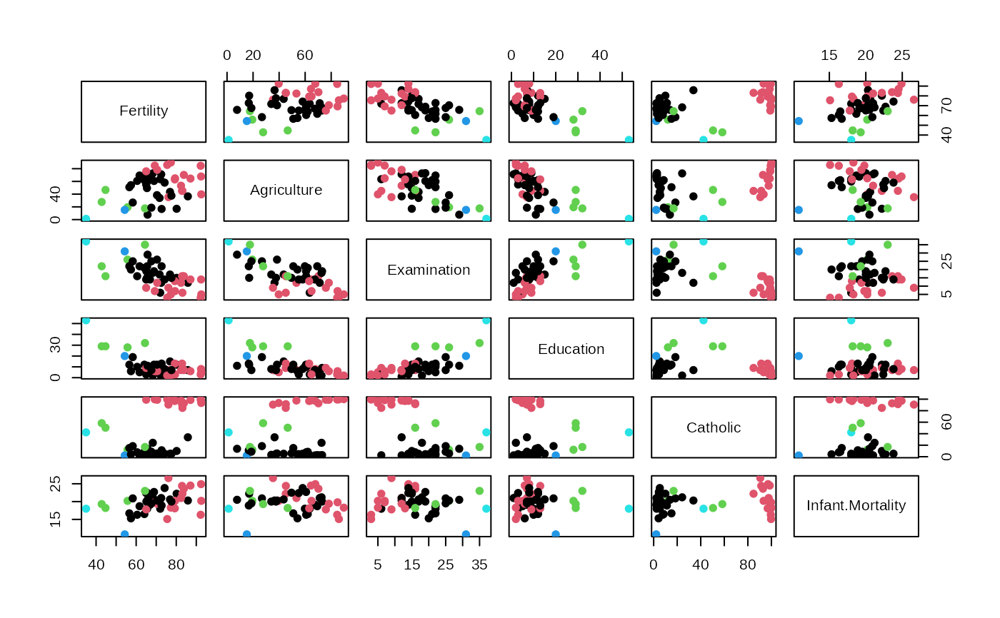
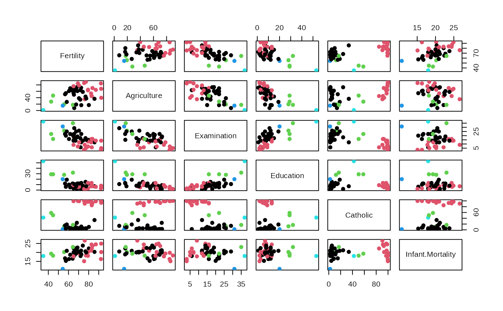

Optimally solves weighted cluster editing (also known as »correlation clustering« or »clique partitioning problem«).
wce(x)Arguments
- x
A N x N similarity matrix. Larger values indicate stronger agreement / similarity between a pair of data points
Value
An integer vector representing the cluster affiliation of each data point
Details
Finds the clustering that maximizes the sum of pairwise similarities within clusters. In the input some similarities should be negative (indicating dissimilarity) because otherwise the maximum sum of similarities is obtained by simply joining all elements within a single big cluster.
Note
This function requires the R package Rglpk and the GNU linear
programming kit.
References
Bansal, N., Blum, A., & Chawla, S. (2004). Correlation clustering. Machine Learning, 56, 89–113.
Böcker, S., & Baumbach, J. (2013). Cluster editing. In Conference on Computability in Europe (pp. 33–44).
Grötschel, M., & Wakabayashi, Y. (1989). A cutting plane algorithm for a clustering problem. Mathematical Programming, 45, 59-96.
Wittkop, T., Emig, D., Lange, S., Rahmann, S., Albrecht, M., Morris, J. H., . . . Baumbach, J. (2010). Partitioning biological data with transitivity clustering. Nature Methods, 7, 419–420.
Examples
# \donttest{
features <- swiss
distances <- dist(scale(swiss))
hist(distances)
 # Define agreement as being close enough to each other.
# By defining low agreement as -1 and high agreement as +1, we
# solve *unweighted* cluster editing
agreements <- ifelse(as.matrix(distances) < 3, 1, -1)
clusters <- wce(agreements)
plot(swiss, col = clusters, pch = 19)

# }
# Define agreement as being close enough to each other.
# By defining low agreement as -1 and high agreement as +1, we
# solve *unweighted* cluster editing
agreements <- ifelse(as.matrix(distances) < 3, 1, -1)
clusters <- wce(agreements)
plot(swiss, col = clusters, pch = 19)

# }